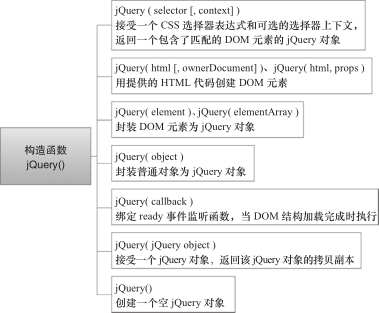

jQuery技术内幕笔记-2-jQuery构造函数
jQuery 对象是一个类数组对象，含有连续的整型属性、length 属性和 jQuery 自定义方法。jQuery 对象由构造函数 jQuery() 创建，$() 则是 jQuery() 的缩写。
构造函数 jQuery() 用法
如果调用构造函数 jQuery() 时传入的参数不同，创建 jQuery 对象的逻辑也会随之不同。构造函数 jQuery() 有 7 种用法：

jQuery( selector [, context] )
如果传入一个字符串参数，jQuery 会检查这个字符串是选择器表达式还是 HTML 代码。如果是选择器表达式，则遍历文档，查找与之匹配的 DOM 元素，并创建一个包含了这些 DOM 元素引用的 jQuery 对象；如果没有元素与之匹配，则创建一个空 jQuery 对象，其中不包含任何元素，其属性 length 等于 0。
默认情况下，对匹配元素的查找将从根元素 document 对象开始，即查找范围是整个文档树，不过也可以传入第二个参数 context 来限定查找范围(参数 context 称为“选择器的上下文”，或简称“上下文”),例如：1
2
3$('div.foo').click(function() {
$('span', this).addClass('bar'); // 限定查找范围
});
对选择器表达式“ span”的查找被限制在了 this 的范围内，即只有被点击元素内的 span 元素才会被添加类样式“bar”。
如果选择器表达式 selector 是简单的“ #id”，且没有指定上下文 context，则调用浏览器原生方法 document.getElementById() 查找属性 id 等于指定值的元素；如果是比“#id”复杂的选择器表达式或指定了上下文，则通过 jQuery 方法 .find() 查找，因此 $('span', this) 等价于 $(this).find('span')。
至于方法 .find()，会调用 CSS 选择器引擎 Sizzle 实现。
jQuery( html [, ownerDocument] )、jQuery( html, props )
如果传入的字符串参数看起来像一段 HTML 代码（例如，字符串中含有 <tag…>），jQuery 则尝试用这段 HTML 代码创建新的 DOM 元素，并创建一个包含了这些 DOM 元素引用的 jQuery 对象。
如果 HTML 代码是一个单独标签，例如，$('<img/>') 或 $('<a></a>')，jQuery 会使用浏览器原生方法 document.createElement() 创建 DOM 元素。如果是比单独标签更复杂的HTML 片段，则利用浏览器的 innerHTML 机制创建 DOM 元素，这个过程由方法 jQuery.buildFragment() 和方法 jQuery.clean() 实现。
第二个参数 ownerDocument 用于指定创建新 DOM 元素的文档对象，如果不传入，则默认为当前文档对象。
如果 HTML 代码是一个单独标签，那么第二个参数还可以是 props，props 是一个包含了属性、事件的普通对象；在调用 document.createElement() 创建 DOM 元素后，参数 props 会被传给 jQuery 方法 .attr()，然后由 .attr() 负责把参数 props 中的属性、事件设置到新创建的DOM 元素上。
参数 props 的属性可以是任意的事件类型（如“ click”），此时属性值应该是事件监听函数，它将被绑定到新创建的 DOM 元素上；参数 props 可以含有以下特殊属性：val、css、html、text、data、width、height、offset，相应的 jQuery 方法：.val()、.css()、.html()、.text()、.data()、.width()、.height()、.offset() 将被执行，并且属性值会作为参数传入；其他类型的属性则会被设置到新创建的 DOM 元素上，某些特殊属性还会做跨浏览器兼容（如 type、value、tabindex 等）；可以通过属性名 class 设置类样式，但要用引号把 class 包裹起来，因为 class是 JavaScript 保留字。
例如，在下面的例子中，创建一个 div 元素，并设置类样式为“ test”、设置文本内容为“ Click me!”、绑定一个 click 事件，然后插入 body 节点的末尾，当点击该div 元素时，还会切换类样式 test：1
2
3
4
5
6
7$("<div/>", {
"class": "test",
text: "Click me!",
click: function(){
$(this).toggleClass("test");
}
}).appendTo("body");
jQuery( element )、jQuery( elementArray )
如果传入一个 DOM 元素或 DOM元素数组，则把 DOM 元素封装到 jQuery 对象中并返回。这个功能常见于事件监听函数，即把关键字 this 引用的 DOM 元素封装为 jQuery 对象，然后在该 jQuery 对象上调用 jQuery 方法。
例如，在下面的例子中，先调用 $(this) 把被点击的 div 元素封装为 jQuery 对象，然后调用方法 slideUp() 以滑动动画隐藏该 div 元素：1
2
3$('div.foo').click(function() {
$(this).slideUp();
});
jQuery( object )
如果传入一个普通 JavaScript 对象，则把该对象封装到 jQuery 对象中并返回。利用这个特性可以方便地在普通 JavaScript 对象上实现自定义事件的绑定和触发。
例如，执行下面的代码会在对象 foo 上绑定一个自定义事件 custom，然后手动触发这个事件，执行绑定的 custom 事件监听函数，如下所示：1
2
3
4
5
6
7
8
9
10// 定义一个普通 JavaScript 对象
var foo = {foo:'bar', hello:'world'};
// 封装成 jQuery 对象
var $foo = $(foo);
// 绑定一个事件
$foo.on('custom', function (){
console.log('custom event was called');
});
// 触发这个事件
$foo.trigger('custom'); // 在控制台打印 "custom event was called"
jQuery( callback )
如果传入一个函数，则在 document 上绑定一个 ready 事件监听函数，当 DOM 结构加载完成时执行。ready 事件的触发要早于 load 事件。ready 事件并不是浏览器原生事件，而是DOMContentLoaded 事件、onreadystatechange 事件和函数 doScrollCheck() 的统称。
jQuery( jQuery object )
如果传入一个 jQuery 对象，则创建该 jQuery 对象的一个副本并返回，副本与传入的jQuery 对象引用完全相同的 DOM 元素。
jQuery()
如果不传入任何参数，则返回一个空的 jQuery 对象，属性 length 为 0。这个功能可以用来复用 jQuery 对象，例如，创建一个空的 jQuery 对象，然后在需要时
先手动修改其中的元素，再调用 jQuery 方法，从而避免重复创建 jQuery 对象。
总体结构
构造 jQuery 对象模块的总体源码结构如代码：1
2
3
4
5
6
7
8
9
10
11
12
13
14
15
16
17
18
19
20
21
22
23
2416 (function( window, undefined ) {
// 构造 jQuery 对象
22 var jQuery = (function() {
25 var jQuery = function( selector, context ) {
27 return new jQuery.fn.init( selector, context, rootjQuery );
28 },
// 一堆局部变量声明
97 jQuery.fn = jQuery.prototype = {
98 constructor: jQuery,
99 init: function( selector, context, rootjQuery ) { ... },
// 一堆原型属性和方法
319 };
322 jQuery.fn.init.prototype = jQuery.fn;
324 jQuery.extend = jQuery.fn.extend = function() { ... };
388 jQuery.extend({
// 一堆静态属性和方法
892 });
955 return jQuery;
957 })();
// 省略其他模块的代码
9246 window.jQuery = window.$ = jQuery;
9266 })( window );
- 第 16 ～ 9266 行是最外层的自调用匿名函数，当 jQuery 初始化时，这个自调用匿名函数包含的所有 JavaScript 代码将被执行。
- 第 22 行定义了一个变量 jQuery，第 22 ～ 957 行的自调用匿名函数返回 jQuery 构造函数并赋值给变量 jQuery，最后在第 9246 行把这个 jQuery 变量暴露给全局作用域 window，并定义了别名 $。
- 在第 22 ～ 957 行的自调用匿名函数内，第 25 行又定义了一个变量 jQuery，它的值是jQuery 构造函数，在第 955 行返回并赋值给第 22 行的变量 jQuery。因此，这两个 jQuery 变量是等价的，都指向 jQuery 构造函数。
- 第 97 ～ 319 行覆盖了构造函数 jQuery() 的原型对象。第 98 行覆盖了原型对象的属性constructor，使它指向 jQuery 构造函数；第 99 行定义了原型方法 jQuery.fn.init()，它负责解析参数 selector 和 context 的类型并执行相应的查找；在第 27 行可以看到，当我们调用jQuery 构造函数时，实际返回的是 jQuery.fn.init() 的实例；此外，还定义了一堆其他的原型属性和方法，例如，selector、length、size()、toArray() 等。
- 第 322 行用 jQuery 构造函数的原型对象 jQuery.fn 覆盖了 jQuery.fn.init() 的原型对象。
- 第 324 行定义了 jQuery.extend() 和 jQuery.fn.extend()，用于合并两个或多个对象的属性到第一个对象；
- 第 388 ～ 892 行执行 jQuery.extend() 在 jQuery 构造函数上定义了一堆静态属性和方法，例如，noConflict()、isReady、readyWait、holdReady() 等。
为什么要在构造函数jQuery()内部用运算符new创建并返回另一个构造函数的实例？
通常创建一个对象或实例的方式是在运算符 new 后紧跟一个构造函数，例如，new Date() 会返回一个 Date 对象；但是，如果构造函数有返回值，运算符 new 所创建的对象会被丢弃，返回值将作为 new 表达式的值。
jQuery 利用了这一特性，通过在构造函数 jQuery() 内部用运算符 new 创建并返回另一个构造函数的实例，省去了构造函数 jQuery() 前面的运算符 new，即我们创建 jQuery 对象时，可以省略运算符 new 直接写 jQuery()。
在第 9246 行还为构造函数 jQuery() 定义了别名 $，因此，创建 jQuery对象的常见写法是 $()。
为什么在第 97 行执行 jQuery.fn = jQuery.prototype，设置 jQuery.fn 指向构造函数jQuery() 的原型对象 jQuery.prototype ？
jQuery.fn 是 jQuery.prototype 的简写，可以少写 7 个字符，方便拼写。
既然调用构造函数 jQuery() 返回的 jQuery 对象实际上是构造函数 jQuery.fn.init() 的实例，为什么能在构造函数 jQuery.fn.init() 的实例上调用构造函数 jQuery() 的原型方法和属性？例如，$(‘#id’).length 和 $(‘#id’).size()。
在第 322 行执行 jQuery.fn.init.prototype = jQuery.fn 时，用构造函数 jQuery() 的原型对象覆盖了构造函数 jQuery.fn.init() 的原型对象，从而使构造函数 jQuery.fn.init() 的实例也可以访问构造函数 jQuery() 的原型方法和属性。
为什么要把第 25 ～ 955 行的代码包裹在一个自调用匿名函数中，然后把第 25 行定义的构造函数 jQuery() 作为返回值赋值给第 22 行的 jQuery 变量？去掉这个自调用匿名函数，直接在第 25 行定义构造函数 jQuery() 不也可以吗？去掉了不是更容易阅读和理解吗？
去掉第 25 ～ 955 行的自调用匿名函数当然可以，但会潜在地增加构造 jQuery 对象模块与其他模块的耦合度。在第 25 ～ 97 行之间还定义了很多其他的局部变量，这些局部变量只在构造 jQuery 对象模块内部使用。通过把这些局部变量包裹在一个自调用匿名函数中，实现了高内聚低耦合的设计思想。
为什么要覆盖构造函数 jQuery() 的原型对象 jQuery.prototype ？
在原型对象 jQuery.prototype 上定义的属性和方法会被所有 jQuery 对象继承，可以有效减少每个 jQuery 对象所需的内存。事实上，jQuery 对象只包含 5 种非继承属性，其余都继承自原型对象 jQuery.prototype ；在构造函数 jQuery.fn.init() 中设置了整型属性、length、selector、context ；在原型方法 .pushStack() 中设置了 prevObject。因此，也不必因为 jQuery对象带有太多的属性和方法而担心会占用太多的内存。
本系列笔记来自《jQuery技术内幕》一书中的部分内容。注意：其内的jQuery版本为1.7.1，后面的版本也许在一些方法和功能模块上有修改，了解其思想即可，但不可想当然的直接认定。